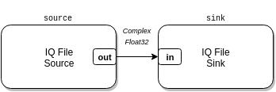

iqfile_converter.luaThis example is an IQ file format converter. It converts the binary encoding of IQ files from one format, e.g. signed 8-bit, to another, e.g. 32-bit float little endian. This example doesn’t use the RTL-SDR at all, but instead demonstrates how you can build file-based command-line utilities with modulation, demodulation, decoding, file conversion, etc. flow graphs that run to completion.

local radio = require('radio')
if #arg < 4 then
io.stderr:write("Usage: " .. arg[0] ..
" <input IQ file> <input format> <output IQ file> <output format>\n")
io.stderr:write("\nSupported formats:\n" ..
" s8, u8,\n" ..
" u16le, u16be, s16le, s16be,\n" ..
" u32le, u32be, s32le, s32be,\n" ..
" f32le, f32be, f64le, f64be\n")
os.exit(1)
end
radio.CompositeBlock():connect(
radio.IQFileSource(arg[1], arg[2], 0),
radio.IQFileSink(arg[3], arg[4])
):run()
Usage: examples/iqfile_converter.lua <input IQ file> <input format> <output IQ file> <output format>
Supported formats:
s8, u8,
u16le, u16be, s16le, s16be,
u32le, u32be, s32le, s32be,
f32le, f32be, f64le, f64be
Convert test.s8.iq, with signed 8-bit samples, into test.f32le.iq, with
32-bit float little endian samples:
$ ./luaradio examples/iqfile_converter.lua test.s8.iq s8 test.f32le.iq f32le
$ du -b test.s8.iq
10236 test.s8.iq
$ du -b test.f32le.iq
40944 test.f32le.iq
$